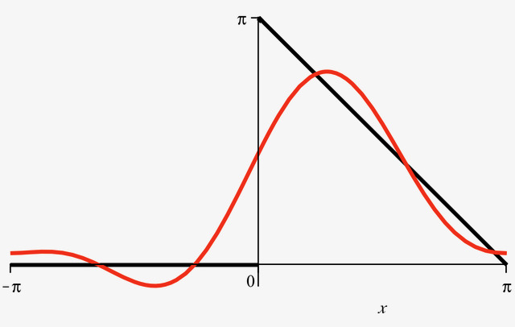

3 Fourier Series
3.1 Definition
The aim is to represent functions \(f(x)\) of period \(2p\) in terms of a sum of the constant function 1 and the trigonometric functions in the set \(\eqref{ortho}\), which are all of period \(2p\). Starting with \(f(x)\) defined on \((-p,p)\), the trigonometric series is of the form \[\begin{equation} \label{Fourierexp}
\frac{a_0}{2}+\sum_{n=1}^{\infty} [\,a_n\cos \frac{n\pi}{p}x+
b_n\sin \frac{n\pi}{p}x\,], \end{equation}\] with the coefficients being the constants, \[\begin{align}
a_0&=\frac{1}{p}\int_{-p}^p f(x)\,dx\label{a0}\\
a_n&=\frac{1}{p}\int_{-p}^p f(x)\,\cos \frac{n\pi}{p}x\,dx\label{an}\\
b_n&=\frac{1}{p}\int_{-p}^p f(x)\,\sin \frac{n\pi}{p}x\,dx.\label{bn}\end{align}\] The above formulas are often called Euler formulas. Note that the coefficient of the constant function 1 is labelled \(a_0/2\) rather than \(a_0\); this is for convenience so that the formula for \(a_n\) reduces to \(a_0\) for \(n=0\).
If the coefficients are such that the series \(\eqref{Fourierexp}\) converges, then its sum will be a function of period \(2p\).
Suppose that \(f(x)\) is a given function of period \(2p\), which can be represented by a series of the form \(\eqref{Fourierexp}\), and that this series converges and that its sum is \(f(x)\). Then, one writes \[\begin{equation} \label{Fourierexp2} f(x)=\frac{a_0}{2}+\sum_{n=1}^{\infty} [\,a_n\cos \frac{n\pi}{p}x+ b_n\sin \frac{n\pi}{p}x\,], \end{equation}\] and calls \(\eqref{Fourierexp2}\) the Fourier series of \(f(x)\).
In this case, the constants \(a_0, a_n, b_n\) for \(n>0\) are called the Fourier coefficients of \(f(x)\).
3.2 Determination of Fourier coefficients
Assume that the function \(f(x)\) is integrable on \((-p,p)\), and that it is equal to its Fourier series, as in \(\eqref{Fourierexp2}\). Also assume that the series \(\eqref{Fourierexp2}\) multiplied by \(\cos \frac{m\pi}{p}x\) or \(\sin \frac{m\pi}{p}x\) converges (this is to allow term by term integration of the series). The Fourier coefficients \(a_0,a_n,b_n\) are determined as follows.
\(\bullet\) Multiply \(\eqref{Fourierexp2}\) by the number 1 and integrate both sides between \(-p\) and \(p\): \[\begin{aligned} & \int_{-p}^p f(x) \cdot 1 \,dx=\\ &\int_{-p}^p \{ \, \frac{a_0}{2} \cdot 1 + \sum_{n=1}^{\infty}[\,a_n \cos \frac{n\pi}{p}x+b_n \sin \frac{n\pi}{p}x\,] \, \cdot 1 \}\, dx,\end{aligned}\] which, after use of \(\eqref{1cos}\) and \(\eqref{1sin}\), yields \[\int_{-p}^p f(x)\,dx = 2p \frac{a_0}{2}=p\,a_0.\]
\(\bullet\) Multiply \(\eqref{Fourierexp2}\) by \(\cos \frac{m\pi}{p}x\) where \(m \neq 0\), and integrate both sides between \(-p\) and \(p\): \[\begin{aligned} & \int_{-p}^p f(x) \cdot \cos \frac{m\pi}{p}x \,dx=\\ & \int_{-p}^p \{ \frac{a_0}{2} \cdot \cos \frac{m\pi}{p}x +\sum_{n=1}^{\infty}[\,a_n \cos \frac{n\pi}{p}x+b_n \sin \frac{n\pi}{p}x\,] \, \cdot \cos \frac{m\pi}{p}x \,\} dx ,\end{aligned}\] which gives, after use of \(\eqref{1cos}\), \(\eqref{coscos}\) and \(\eqref{sincos}\), \[\int_{-p}^p f(x) \cos \frac{m\pi}{p}x\, dx=p\,a_m.\] \(\bullet\) Multiply \(\eqref{Fourierexp2}\) by \(\sin \frac{m\pi}{p}x\) where \(m \neq 0\), and integrate both sides between \(-p\) and \(p\): \[\begin{aligned} &\int_{-p}^p f(x) \cdot \sin \frac{m\pi}{p}x \,dx=\\ &\int_{-p}^p \{ \, \frac{a_0}{2} \cdot \sin \frac{m\pi}{p}x + \sum_{n=1}^{\infty}[\,a_n \cos \frac{n\pi}{p}x+b_n \sin \frac{n\pi}{p}x\,] \cdot \sin \frac{m\pi}{p}x \,\} dx ,\end{aligned}\] which gives, after use of \(\eqref{1sin}\), \(\eqref{sincos}\) and \(\eqref{sinsin}\), \[\int_{-p}^p f(x) \sin \frac{m\pi}{p}x\, dx=p\,b_m.\]
Expand \[\begin{equation} \label{example}
f(x)=\left \{ \begin{array}{l}
0 \,\,{\rm for }\,\,-\pi < x < 0,\\
\pi-x \,\, {\rm for}\,\, 0 \le x < \pi\end{array} \right. \end{equation}\] in a Fourier series. The graph of \(f(x)\) is given in Fig. 3.
Solution: Here, \(p=\pi\) and application of \(\eqref{a0}\) yields \[a_0=\frac{1}{\pi}\int_{-\pi}^{\pi} f(x)\,dx=\frac{1}{\pi}\int_{-\pi}^{0}0\,dx +\frac{1}{\pi}\int_0^{\pi}(\pi -x)\,dx =\frac{\pi}{2}.\] On the other hand, application of \(\eqref{an}\) yields \[\begin{aligned} &a_n=\frac{1}{\pi}\int_{-\pi}^{\pi} f(x)\,\cos nx \,dx=\\ &\frac{1}{\pi}\int_0^{\pi}(\pi -x)\,\cos nx \,dx=\frac{1}{n\pi} [-\frac{\cos nx}{n}]_0^{\pi} = -\frac{1}{n^2\pi} [ (-1)^n-1],\end{aligned}\] where integration by parts has been used (set \(u=x, dv= \cos nx dx\)). Finally, application of \(\eqref{bn}\) yields \[\begin{aligned} b_n&=\frac{1}{\pi}\int_{-\pi}^{\pi} f(x)\,\sin nx \,dx= \frac{1}{\pi}\int_0^{\pi}(\pi -x)\,\sin nx \,dx\\ &=\int_0^{\pi} \sin nx\,dx -\frac{1}{\pi} \int_0^{\pi} x\sin nx \,dx \nonumber\\ &=-[\frac{\cos nx}{n}]_0^{\pi} -\frac{1}{\pi}[-\frac{x}{n}\cos nx ]_0^{\pi} +\frac{1}{n}\int_0^{\pi} \cos nx \,dx\\ &=-\frac{1}{n}[(-1)^n-1]+\frac{1}{n\pi} [ (-1)^n\pi -0]=\frac{1}{n},\end{aligned}\] where integration by parts has been used (set \(u=x, dv=\sin nx dx\)).
So the Fourier expansion of \(f(x)\) on the interval \((-\pi, \pi)\) is given by, \[\begin{equation} \label{series} \frac{\pi}{4} + \sum _{n=1}^{\infty} \{ \frac{1-(-1)^n}{n^2\pi}\cos nx + \frac{1}{n} \sin nx \}. \end{equation}\] One can tidy the final expression a bit more, as \(1-(-1)^n=0\) when \(n\) is even, while \(1-(-1)^n=2\) when \(n\) is odd. Therefore, only the terms corresponding to \(n\) odd will survive in the cosine series of \(\eqref{series}\). Let us thus set \(n=2k-1\), and sum over \(k\) rather than \(n\). This yields \[\begin{equation} \label{series2} \frac{\pi}{4} + \sum _{k=1}^{\infty} \{ \frac{2}{(2k-1)^2\pi}\cos (2k-1)x + \frac{1}{k} \sin kx \}. \end{equation}\]
The delta function \(\delta(x)\) is defined to be the ‘function’ which is equal to \(0\) everywhere except at \(x=0\), and which satisfies \[\int_a^b \delta(x)\,f(x)\,dx= f(0)\] when \(0 \in [a,b]\). Note that \(\delta(x)\) is not, actually, a function. It is a distribution, which is a generalization of the function concept, and it is used extensively in mathematical physics. Let us calculate the Fourier coefficients of \(\delta(x)\), considered defined on \((-p,p)\). Using the formulas \(\eqref{a0}\)-\(\eqref{bn}\), we get, \[\begin{aligned} a_0&=&\frac{1}{p}\int_{-p}^p \delta(x)\,dx=\frac{1}{p}\\ a_n&=&\frac{1}{p}\int_{-p}^p \delta (x)\,\cos\,\frac{n\pi}{p}x\,dx=\frac{1}{p}\cos 0=\frac{1}{p}\\ b_n&=&\frac{1}{p}\int_{-p}^p\delta(x)\,\sin\,\frac{n\pi}{p}x\,dx=\frac{1}{p}.\sin 0=0.\end{aligned}\]
The calculation of Fourier coefficients is quite tedious, and if you need to calculate such quantities in your future career, you may benefit from developing a Maple code to this effect. An example of such code is posted on the course webpages (see Handouts). You are encouraged to experiment with it.
3.3 Convergence of a Fourier Series
3.3.1 Sequence of Partial Sums
Fourier series do not always converge, and even if they do converge, they do not necessarily converge to the function that generated them. In order to get insight into convergence, let us consider the sequence of partial sums \(\{ S_m(x), m\ge 1 \}\) of the Fourier series generated by the function \(f(x)\), where \[S_m(x)=\frac{a_0}{2}+\sum_{n=1}^m (a_n \cos \frac{n\pi}{p}x+b_n \sin \frac{n\pi}{p}x ).\] If the sequence of partial sums converges to \(f(x)\) for some \(x \in (-p,p)\), i.e. if \[\boxed{f(x)=\lim _{m\rightarrow \infty} S_m(x)}\] then the Fourier series converges to \(f(x)\) at that value of \(x\) and one writes \[f(x)=\frac{a_0}{2}+\sum_{n=1}^\infty (a_n \cos \frac{n\pi}{p}x+b_n \sin \frac{n\pi}{p}x ).\]
For instance, the \(m^{th}\) partial sum corresponding to the Fourier series \(\eqref{series}\) is, \[S_m(x)= \frac{\pi}{4}+\sum _{n=1}^m \{ \frac{1-(-1)^n}{n^2\pi} \cos nx + \frac{1}{n} \sin nx \}.\] Observe the plots for \(S_2(x), S_4(x)\) and \(S_{14}(x)\) shown in Fig. 6, and compare with the graph in Fig. 3. As \(m\) increases, it becomes more and more difficult to distinguish \(S_m\) from the graph of \(f(x)\), and we can be fairly confident that the Fourier series of \(f(x)\) converges to \(f(x)\) for all \(x \in (-\pi,\pi)\).
|  |  |
| \(S_2(x)\) | \(S_4(x)\) |
| \(S_{14}(x)\) |
3.3.2 Convergence theorem
Let \(f\) and \(f'\) be continuous functions, except at a finite number of points in the interval \((-p,p)\) (i.e. let \(f\) and \(f'\) be piecewise continuous on \((-p,p)\)), and let them only have finite (jump) discontinuities at these points. Then,
\(\bullet\) At a point of continuity \(x\), the Fourier series of \(f\) on \((-p,p)\) converges to \(f(x)\).
\(\bullet\) At a point of discontinuity \(x_0\), the Fourier series converges to the average \[\frac{f(x_{0+})+f(x_{0-})}{2},\] where \[\begin{aligned} f(x_{0+})&=& \lim_{h \rightarrow 0}f(x_0+h)\qquad h>0,\\ f(x_{0-})&=& \lim_{h \rightarrow 0}f(x_0-h)\qquad h>0.\end{aligned}\] In other words, it converges to the midpoint of the jump. Moreover, if \(f(-p)\neq f(p)\), its Fourier series converges to the average of the endpoints at both ends, as illustrated in Fig. 8 (for \(p\equiv \pi\)).
Left as an exercise.
In summary,
If the function \(\mathsf{f(x)}\) is piecewise smooth on \(\mathsf{x\in(-p, p)}\) then the sequence of truncated Fourier series converges as follows: \[\begin{aligned} &&\mathsf{\lim_{N\to\infty}S_N(x)} \to \mathsf{ \frac{1}{2}\left(\lim_{y\,\downarrow\, x}f(y) + \lim_{y\,\uparrow\, x}f(y)\right)}\\ &&= \left\{\begin{array}{l } \mathsf{f(x)} \,\, \textsf{if}\,\, \textsf{f}\, \,\textsf{is continuous at}\,\, \textsf{x},\\ \textsf{average of}\,\, \textsf{f(x)}\,\,\textsf{across jump at a}\\ \quad \textsf{ discontinuity in}\,\, \textsf{f(x)} \end{array}\right. \end{aligned}\] (\(\mathsf{y \downarrow x}\) and \(\mathsf{y \uparrow x}\) denote the one-sided limits as \(\mathsf{y}\) approaches \(\mathsf{x}\) from above or below respectively.)
The above also illustrates how to produce sans serif fonts for both text and formulas (through textsf and mathsf).